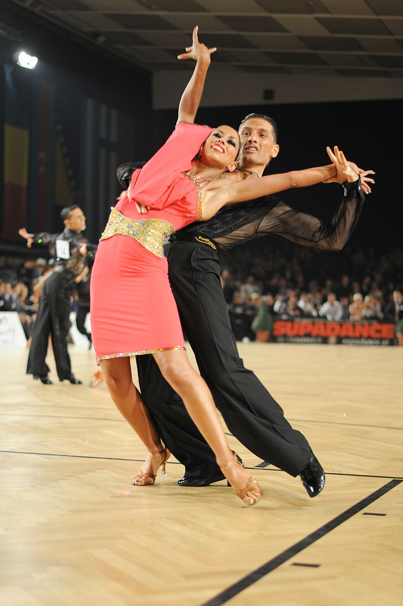

Brazilian Dance Archive
DancopediaBrazil
Explore the rhythms, regions, and cultural stories behind Brazil's most expressive dance traditions.
Start Exploring
Featured Dance Styles
From carnival stages to intimate partner dances — each style carries the pulse of a distinct Brazilian tradition.

Samba
Brazil's globally recognized rhythm of carnival, percussion, and community.
ExploreForro
Close partner movement shaped by northeastern rhythms and dance halls.
ExploreFrevo
Fast footwork, acrobatics, and bright umbrellas from Pernambuco's carnival.
ExploreDance by Place
Every rhythm has a home.
Brazilian dance shifts from coast to inland cities, from carnival streets to intimate ballrooms. Explore dances by region or open the interactive map to trace each style to its cultural origin.

Learn the Culture
A better way to discover Brazilian dance.
Understand Rhythm
See how movement, music, instruments, and tempo shape each tradition.
Compare Styles
Browse traditional, partner, festival, and pop dances side by side.
Search the Archive
Find dances by name, origin, category, or region as the collection grows.
Dance Archive
Explore the Collection
Jump into individual dance pages and discover new styles from across Brazil.